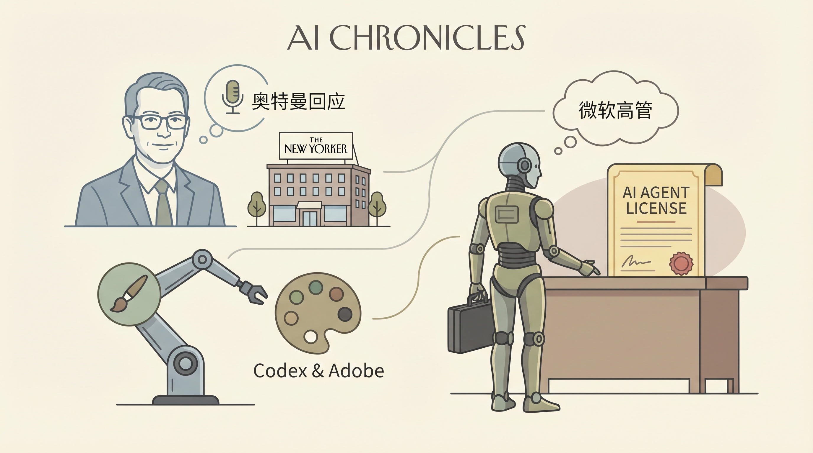

OpenAI CEO Sam Altman回应对其住所的攻击和《纽约客》杂志对其信任度的质疑报道。
两克伴AIGC日报
2026-04-12 星期日

本期关注：OpenAI CEO回应袭击与信任质疑，Codex学会使用Adobe软件，微软称AI代理需购软件许可；Refund Guard推出AI代理退款门控系统，Gemma 4体验获赞媲美早期Gemini，AMD高管称Claude退步不可信复杂工程。
📰 行业动态
OpenAI的Codex AI服务学会使用Adobe软件，引发业界关注。
微软高管提出AI代理可能需要像员工一样购买软件许可证。
🔥 今日焦点
Show HN：Refund Guard 是一款专为AI代理设计的政策门控工具，旨在自动处理退款事宜。该工具通过引入智能决策机制，确保AI代理在执行退款操作时遵循既定政策，从而降低错误发生的风险。这一创新方案的核心在于其能够实时监控AI代理的行为，并在必要时自动触发退款流程，保障用户权益。
Refund Guard 的重要性在于，它为AI代理的决策过程提供了强有力的保障。在AI技术日益普及的今天，AI代理在处理客户服务、交易执行等任务时，可能会因算法错误或外部因素导致不当决策。而Refund Guard 的出现，能够有效避免这些错误，提高AI代理的可靠性和安全性。
标题：体验Gemma 4，AI领域的突破性进展
核心内容概述：u/No-Anchovies在Reddit上分享了他对Gemma 4的体验，称其运行速度快，准确性和信心度令人印象深刻，甚至可与早期Gemini Pro相媲美。Gemma 4的推出，为小型自托管LLM的使用体验带来了显著提升，类似于Deepseek多年前在思考能力方面的贡献。
AMD人工智能高级总监Stella Laurenzo在GitHub上提出，Anthropic的Claude模型自3月初以来性能严重退化，无法可靠地处理复杂工程任务。她分析了近7000个会话，指出该工具在执行复杂任务时表现不佳。这一观点为那些质疑Anthropic不愿发布Mythos模型的人提供了支持，认为其原因是缺乏计算资源，而非模型过于强大。这一事件对AI领域具有重要意义，揭示了大型语言模型在实际应用中可能存在的局限性，对AI从业者和研究者提出了新的挑战。
📚 深度长文
本文由Harrison Chase撰写，深入探讨了“Agent harness”在构建智能代理中的重要性及其与代理记忆的紧密联系。文章指出，随着“Agent harness”成为构建智能代理的主流方式，其地位不可动摇。作者强调，若使用封闭式“Agent harness”，尤其是那些隐藏在专有API背后的，意味着我们正选择放弃对智能代理的控制权。
文章以独特的视角分析了“Agent harness”在智能代理发展中的关键作用，并揭示了其对代理记忆的深远影响。作者认为，智能代理的记忆能力与其“Agent harness”的选择密切相关，进而影响其决策能力和学习能力。
在《不可避免需要开放模型联盟》一文中，作者Nathan Lambert深入探讨了在人工智能领域建立开放模型联盟的必要性。文章核心观点是，随着人工智能技术的快速发展，开放模型联盟将成为推动技术进步和产业创新的关键力量。
作者从多个角度论证了这一观点。首先，开放模型联盟能够促进知识共享和资源整合，降低研发成本，提高创新效率。其次，联盟内的企业可以共同制定行业标准，避免技术壁垒，推动整个行业的健康发展。此外，开放模型联盟还有助于培养人才，提升整个行业的技术水平。
SQLite 3.53.0版本作为一次重大更新，带来了众多用户界面和内部改进。文章详细介绍了几个亮点：
首先，新增了ALTER TABLE语句，支持添加和移除NOT NULL和CHECK约束，这为数据库管理提供了更多灵活性。其次，引入了json_array_insert()函数及其jsonb等价函数，为处理JSON数据提供了便捷。此外，CLI模式也得到显著改进，包括结果格式化，提升了用户体验。
🛠️ 产品推荐
Git why是一款专注于代码版本管理的工具，旨在帮助用户追踪代码中由同事编写的代码片段。该工具通过在Git中记录代理推理轨迹，让用户能够清晰地了解代码变更的动机和原因。Git why能够有效解决团队协作中代码变更不透明、追溯困难的问题，提升代码质量和团队协作效率。对于技术从业者而言，Git why是一款简洁、实用的辅助工具。
---
PlaneFeed是一款创新的飞行追踪应用，用户可像浏览TikTok一样滚动查看随机实时航班，并查看航班详细信息。该应用旨在帮助用户替代社交媒体成瘾，通过完成每日任务，如“找到5架空中客车A320”，提升用户参与度和趣味性。PlaneFeed为飞行爱好者提供了全新的互动体验，满足了他们对实时航班信息的需求。
---
Kern是一款基于AI的智能代理工具，旨在自动化执行任务并展示工作成果。该产品通过集成先进的AI技术，能够高效完成各种繁琐的工作，如数据收集、分析处理等，极大提升工作效率。Kern的核心优势在于其强大的AI能力和创新的工作流程展示方式，让用户轻松监控任务进度，实现工作透明化。对于技术从业者而言，Kern无疑是一款极具价值的工具，能够有效解决工作中重复性任务带来的效率瓶颈。